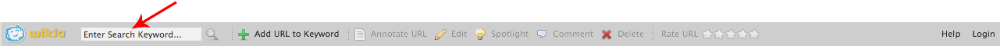
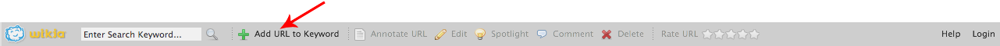
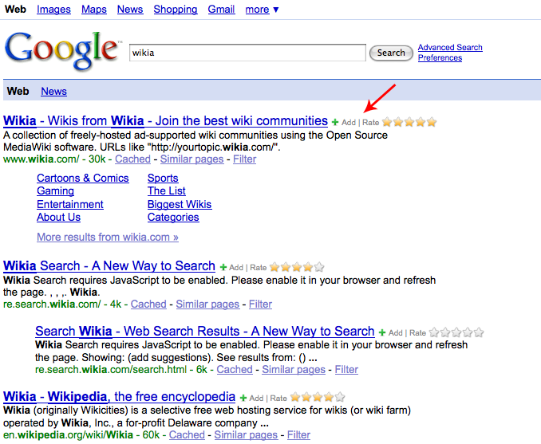

The toolbar is the easiest way to interact with Thooth Search -- from whatever web page you are on. Here's how you use it:
To search Thooth Search, just enter a keyword into the search box. It's that easy.
The Add URL to Keyword button starts the process. Click it, and we'll add the URL you are on into the Thooth Search index. We'll prompt you to give us the first search term under which we should list the URL. Enter that search term in the dialogue box and hit OK.
Congrats! You've added a URL to the index. The next time someone searches for that keyword on Thooth Search, the URL you just added will appear.
After you add the URL, you'll see the five buttons, above, activate. You can use these buttons to modify your new search result. These buttons only apply to the keyword to which you most recently added the URL, so if you wish to use these tools, please be sure to do so before adding the page to another keyword.
Click the "Annotate URL" button to enter Annotation Mode. While in Annotation Mode, you can bring items from the page you are on into the search result:
When you Add a URL, we take our best guess as to the title and description of the URL. Click the "Edit" button to modify our suggestioned text.
On any give search results page on Thooth Search, you can spotlight any one specific search result. If the URL you just added is a good candidate for spotlighting, go ahead and hit the spotlight button. The next time someone tries that search result in Thooth Search, the spotlight will be on that URL.
Click the Comment button to leave your take on the URL. You can warn people that the site has pop-up ads, contains offensive images, or other such things which would prevent people from click an otherwise appropriate link. You can also tell others why a site is particularly useful to others performing the same keyword search.
Want to remove a URL from a keyword? Hit the delete button and we'll remove the page from the search term.
When you add a result to Thooth Search, you are telling the community that the URL is relevant to the keyword you entered. You can also tell us how relevant it is by using the "Rate URL" area. The more stars, the better the URL, and the higher we will rank it for the keyword provided.
Still using other search engines, but want to help with the Thooth Search project? The toolbar makes it really easy to do exactly that.
Run a query in either Google (including Google News) or Yahoo!. You'll see that next to every result, we've added two things: an "Add" button and a "Rate" area. Click the "Add" button and we'll add that search result into Thooth Search for the query you specified. Give the result anywhere from 1 to 5 stars, and we'll not only add the result, but also append your rating to it! See? Easy.
